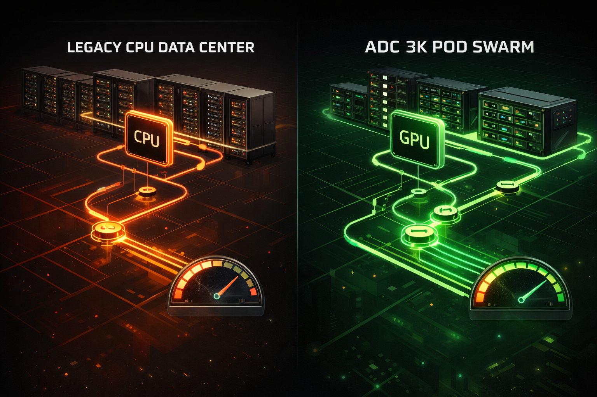

You've probably heard the term but never needed to think about it. This page explains AI factories in plain language — what they are, why they matter, and why they're coming to Louisiana.
Traditional data centers were built around CPUs — general-purpose processors designed for the internet era. Web pages, email, databases. A single CPU puts out roughly 15 kilowatts and handles tasks one at a time. That worked fine for 30 years.
AI doesn't work that way. AI requires thousands of calculations running simultaneously — training models, processing images, running inference. That's what GPUs were built for. A single GPU rack pushes 40-80+ kilowatts with thousands of cores working in parallel. It's not an upgrade — it's a completely different machine.

Sequential processing. One task at a time. ~15 kW per rack. Air cooled. Built for web traffic, email, databases. Like putting a band-aid on a bullet wound — you can add GPUs to an old data center, but the power, cooling, and networking weren't designed for it. You're fighting the building.
Massively parallel processing. Thousands of cores working simultaneously. 40-80+ kW per rack. NVIDIA integrated liquid cooling. Top-of-the-line components at the beginning of their availability — NVIDIA's latest silicon, DSX reference design, behind-the-meter power. Every piece designed to work together. No retrofits. No compromises.
The bottom line: Old data centers are CPUs with some GPUs bolted on. A Louisiana AI factory is GPU-native from the ground up — the power architecture, the cooling system, the networking, the facility itself. That's the difference between retrofitting and purpose-building.
An AI factory is a specialized facility filled with powerful computers called servers that run 24/7, doing work that keeps the modern world running.
Every time you open your phone, check email, watch Netflix, use GPS, ask an AI a question, or pay with a credit card — your request travels to a server in an AI factory, gets processed, and comes back in milliseconds.
Think of it like a power plant, but for information. A power plant takes fuel and turns it into electricity that flows to every home. An AI factory takes electricity and turns it into computing power that flows to every device. Without AI factories, there is no internet, no AI, no digital economy.
The computers. Rows of them, stacked in racks, doing the actual work.
Massive electricity. A single AI factory can use as much power as a small city.
Without cooling, servers overheat in minutes. The #1 engineering challenge.
Fiber optic cables connecting to the internet. Data at the speed of light.
Physical and digital. Fences, cameras, biometrics, fire suppression.
UPS batteries and generators. If the grid goes down, the AI factory keeps running.
iCloud, Google, apps, maps
Every card swipe, Venmo, ATMs
Medical records, telemedicine
Seismic, pipelines, trading
Every AI query = AI factory
Netflix, YouTube, Spotify
GPS, connected cars, autonomy
Military, Social Security, 911
AI chips generate extreme heat — as much as a kitchen toaster per chip. Traditional AI factories use air conditioning, but AI chips are now so powerful that air can't remove heat fast enough. That's where NVIDIA's integrated liquid cooling comes in — built into every rack, 45°C hot water, installed in 2 hours.
Giant warehouse-sized building. Custom every time. 18-36 months to build. $500M+. Air cooled. A few major markets only.
DSX-compliant facility module inside a shipping container. NVIDIA liquid-cooled racks. Manufactured in Lafayette. Truck-shippable. Concrete pad + power + fiber = operational in weeks.
Here's what most people don't understand: the newest AI chips aren't just faster — they produce dramatically more work per watt of electricity. This is the single biggest shift in the industry, and it's why building with the latest hardware isn't a luxury — it's a financial necessity.
700 watts per chip. Air cooled. 80 GB memory. The chip that launched the AI boom — but already being outpaced. Facilities built around H100s are already limited by their air cooling and power design.
1,400 watts per chip — more power, but 4x more work per watt. 288 GB memory. Liquid cooling required. This is what we deploy. More chips working harder on less total electricity.
The next generation — 13x more efficient than the chips people are installing today. Same rack, same cooling infrastructure. Our facilities are designed to accept Rubin as a drop-in upgrade. Build once, upgrade for a decade.
What this means in plain English: If you build an AI factory with last year's chips, you're paying for electricity to do 1 unit of work. Our current hardware does 4 units of work for a similar power bill. Next year's hardware — which drops right into our facilities — does 13 units. The facilities being built with old hardware right now are the equivalent of buying a gas-guzzler the year the electric car came out. They'll be running at a permanent competitive disadvantage.
Most AI factories are 100% dependent on the electrical grid. When the grid gets stressed — and it will, as AI factories multiply — their power costs go up, their reliability goes down, and the community gets stuck with the bill. We do it differently.
Our primary power comes from on-site natural gas generation backed by solar panels and battery storage. Louisiana sits on top of some of the cheapest natural gas in the world (Henry Hub pricing). We're not buying electricity at retail — we're generating our own at wholesale. Solar offsets during daylight hours. Batteries smooth the transitions. This is the base load, 24/7.
The electrical grid is our backup, not our primary source. We can pull from the grid if we need to — but we don't plan around it. This means we're not competing with homes and businesses for electricity. We're not driving up anyone's power bill. The grid is there if we need it, but we're not dependent on it.
On-site diesel generators with fuel storage. If the natural gas pipeline goes down and the grid goes down — like during Hurricane Ida when both were disrupted for weeks — we keep running on diesel. Pipeline-independent. Grid-independent. This is the lesson Ida taught us: have a power source that depends on nothing but the fuel in your tank.
Why this matters to you: AI factories are coming to Louisiana whether you like it or not. The question is whether they're built by companies that drain the grid and drive up your power bill — or by a Louisiana company that generates its own power, uses the cheapest fuel in the country, and treats the grid as a backup. We chose the second path. Your power bill stays where it is.
Traditional AI factories use air conditioning to keep servers cool. They build elaborate hot aisles, cold aisles, blanking plates, raised floors, and giant CRAC units — all to push air past electronics. Even with all that effort, air cooling consumes 30-50% of the total power bill just keeping the temperature down.
We use NVIDIA's integrated liquid cooling — built into every rack, 45°C hot water return, installed in 2 hours. Liquid cooling handles 80%+ of thermal load from GPUs. Internal rack fans manage airflow over power supplies, NVSwitches, and networking. Facility-level dehumidification and HVLS circulation fans maintain environment — no massive CRAC units. The result: a Power Usage Effectiveness (PUE) of 1.05-1.15. That means 90-95% of our electricity goes to actual computing. The industry average is 1.3-1.5, meaning 23-33% of their power is wasted on cooling.
29% of power wasted on cooling. Fans, CRAC units, chilled water, raised floors. Maximum ~30 kW per rack. Cannot support next-gen hardware.
5-15% overhead. Minimal fan noise. 200+ kW per rack. Dramatically reduced water consumption. Supports every generation of hardware — now and future.
The financial impact: At scale, the difference between PUE 1.4 and PUE 1.02 is millions of dollars per year in electricity savings. That's money that goes straight to the bottom line — or gets passed on as lower pricing to customers. Every competitor running air cooling is paying a permanent tax that we don't pay.
Most AI factories are concentrated in a handful of places. Your data travels 1,000+ miles to get processed. Edge AI factories bring computing power closer — right to the factory, the oil field, the city.
Think of it like electricity. Power plants generate electricity, but you need substations near your neighborhood to deliver it. Edge AI factories are the substations of the digital world — bringing computing power closer to where it's needed.
The Gulf Coast is a perfect location for edge AI. Oil & gas, petrochemical, ports, energy — all need high-performance computing nearby, not 1,000 miles away.
Most people think an AI factory is just a room full of computers. It's not. A modern AI factory runs four separate networks — each doing a completely different job. Understanding these networks is what separates people who build real infrastructure from people who just buy servers and rack them.
The main highway. This is how GPUs talk to each other during AI training and inference — sending massive amounts of data at extreme speed. This network needs the highest bandwidth and lowest latency of all four. When people say "InfiniBand" — this is what they're talking about.
The data pipeline. Moves training data and model weights between storage arrays and GPUs. Needs high throughput to keep GPUs fed — a starved GPU is a wasted GPU. Typically runs on high-speed Ethernet or dedicated storage fabric.
The control plane. Software-level monitoring, updates, job scheduling, telemetry. This is how AI orchestration software talks to every node — assigning workloads, collecting performance data, managing the fleet. Runs on standard Ethernet.
The emergency channel. Hardware-level access that works even when the server's OS is crashed or unresponsive — power cycling, BIOS access, remote KVM. Like having a physical hand on every machine, from anywhere. Completely separate from all other networks for security.
Why this matters: Every AI factory module has all four networks built in from the factory. That's what "purpose-built" means — the compute fabric, the storage pipeline, the software control plane, and the hardware management channel are all designed together. Not bolted on after the fact.
Ethernet is the networking technology you already know — it's what connects your laptop to the internet. Introduced in 1979, standardized by IEEE in the 1980s. It's the backbone of every local area network on earth. Reliable, universal, and constantly improving.
InfiniBand is different. It was purpose-built for high-performance computing — extreme throughput, ultra-low latency, and minimal processing overhead. Maintained by the InfiniBand Trade Association (IBTA). When AI workloads need GPUs to communicate at maximum speed with zero wasted cycles, InfiniBand is the answer.
Runs storage, management, and general traffic. RoCE (RDMA over Converged Ethernet) enables high-performance data transfers over Ethernet networks. Good for most workloads — storage access, monitoring, internet connectivity, client-facing inference.
The compute network backbone. GPU-to-GPU communication during training and large-scale inference. Non-negotiable for serious AI workloads — when thousands of GPUs need to synchronize in microseconds, nothing else comes close.
Our approach: We use both. InfiniBand for the compute fabric (GPU-to-GPU), Ethernet for everything else (storage, management, client traffic). This is the same architecture NVIDIA uses in their DGX SuperPOD reference design — because it's the right tool for each job.
NVIDIA doesn't just make GPUs. They build the entire networking stack that connects them — switches, adapters, cables, and security processors. We run an all-NVIDIA networking portfolio because every component is designed to work together.
Quantum switches handle the high-speed compute fabric. Spectrum switches handle Ethernet traffic. Together they form the spine of the AI factory network.
ConnectX SmartNICs plug into every server for high-speed network access. BlueField DPUs add a security and infrastructure processing layer — offloading network tasks so GPUs focus on AI.
Purpose-built cables and transceivers connecting everything together. Fiber and copper options for different distances and speeds. The physical wiring of the AI factory.
Here's what most people miss: the old way of building AI infrastructure meant one giant facility with a fixed network. If you needed more capacity, you built another giant facility. That's not how we work.
Each AI factory module is a self-contained compute node with all four networks built in. Connect it to the InfiniBand spine and it's part of the fabric. The network is software-defined — meaning we control routing, scheduling, and optimization from central operations, not from hardwired physical connections.
Add more pods to an existing site. Each pod plugs into the spine as a new leaf node. Capacity grows without rebuilding anything. Like adding cars to a train — the track is already there.
Add new sites across Louisiana and the Gulf Coast. Each site connects back to the spine via fiber. The fabric gets wider, covering more geography, more customers, more edge locations.
This is the advantage: A fixed mega-facility can only scale by building more mega-facilities. We scale by manufacturing more modules and placing them wherever power and cooling exist — on a concrete pad, on pilings in the marsh, on a barge in the Gulf. The network follows the pods. The software manages the fleet. That's more control than any traditional AI factory has ever had.
Type your question below. Whether it's about the technology, the business, or how this affects your community — we'll get back to you.
Get in touch and tell us who you are. We'll route you to the right conversation — investor materials, deployment inquiry, vendor partnership, or city engagement.
GET INVOLVED →Louisiana'sAI Infrastructure Initiative
(337) 448-4242 | info@louisianaai.net | louisianaai.net